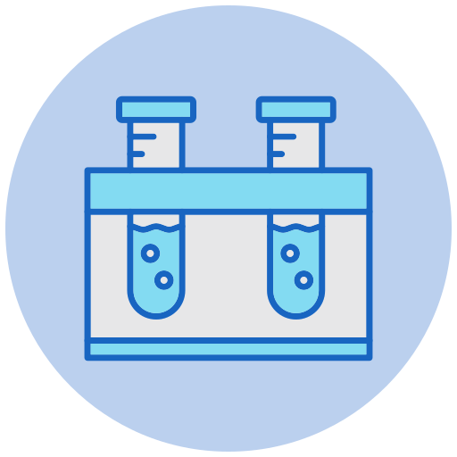
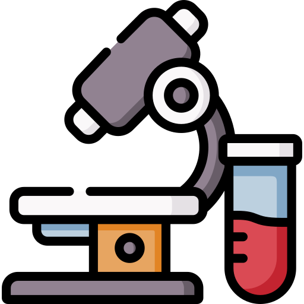
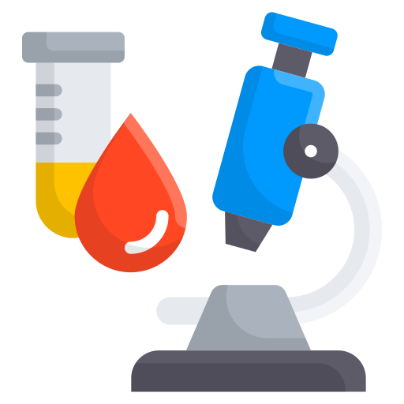
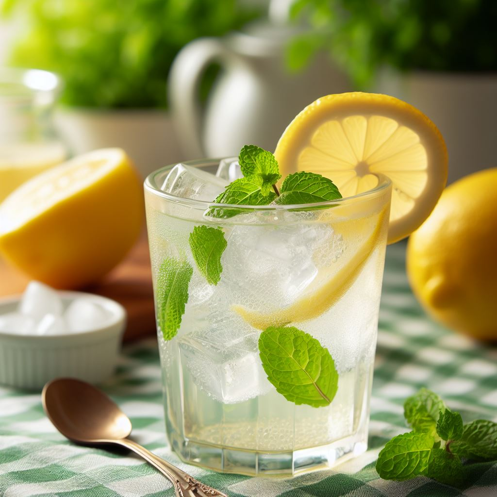
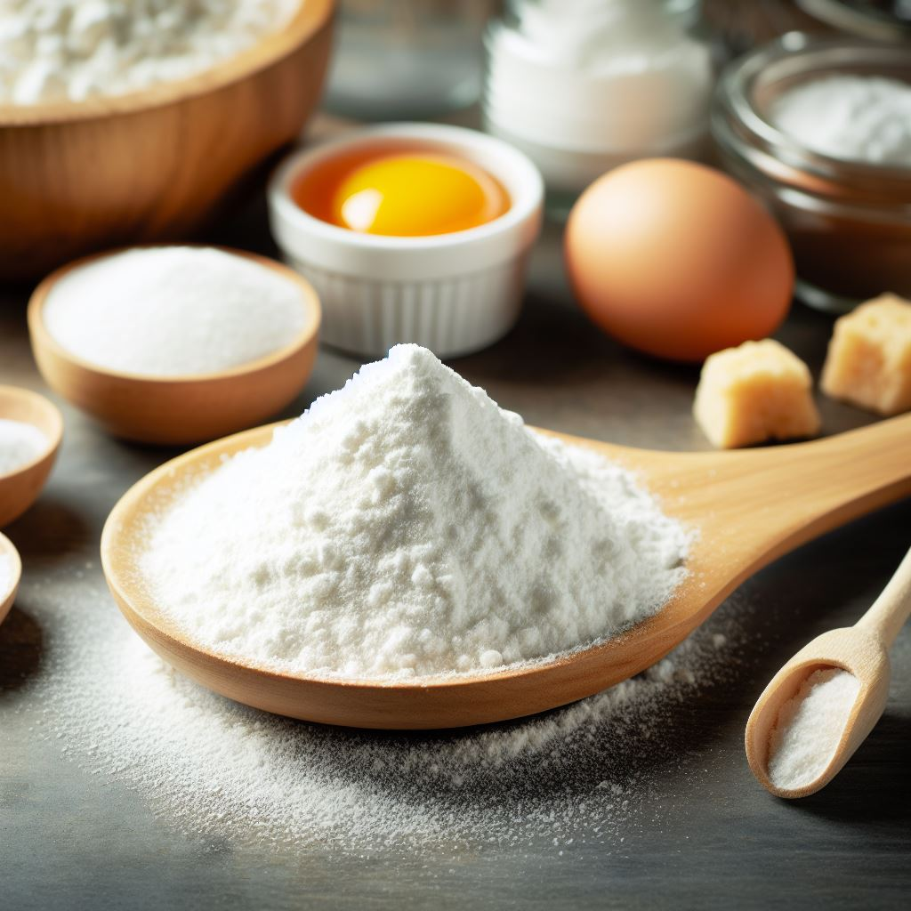
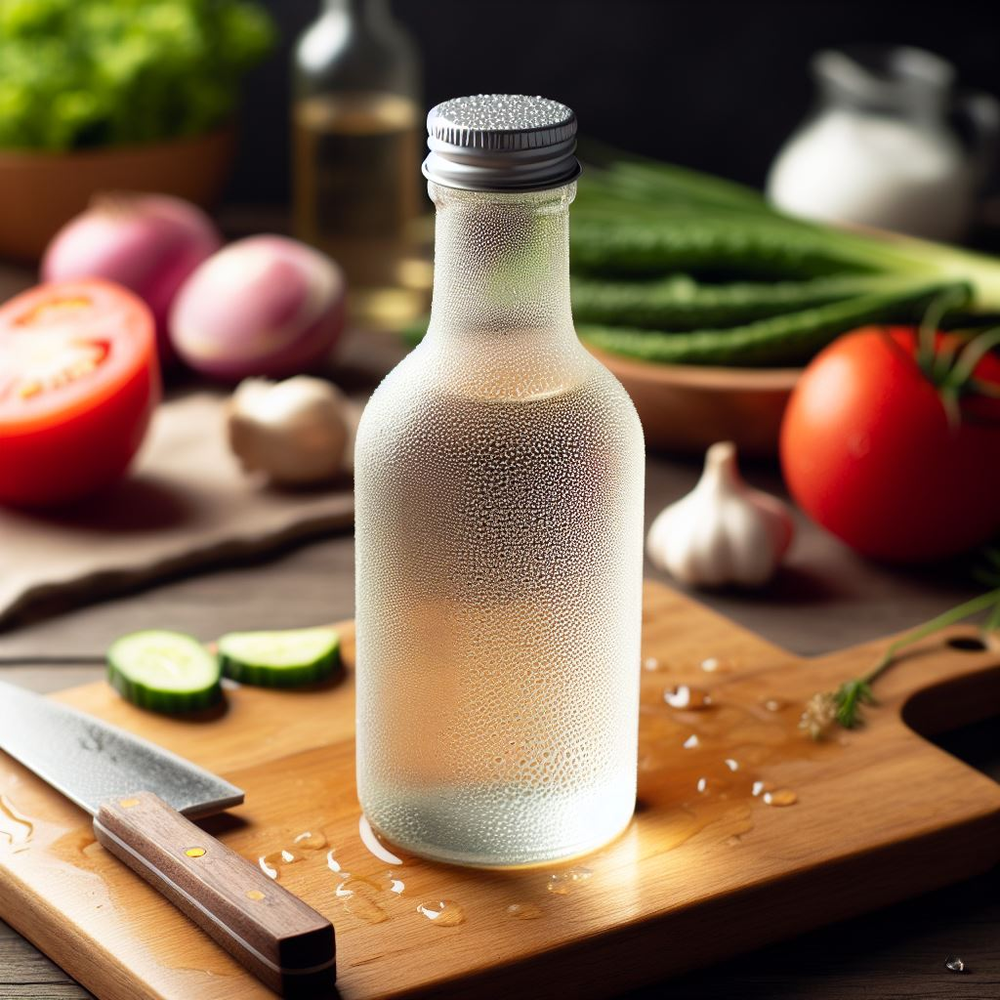
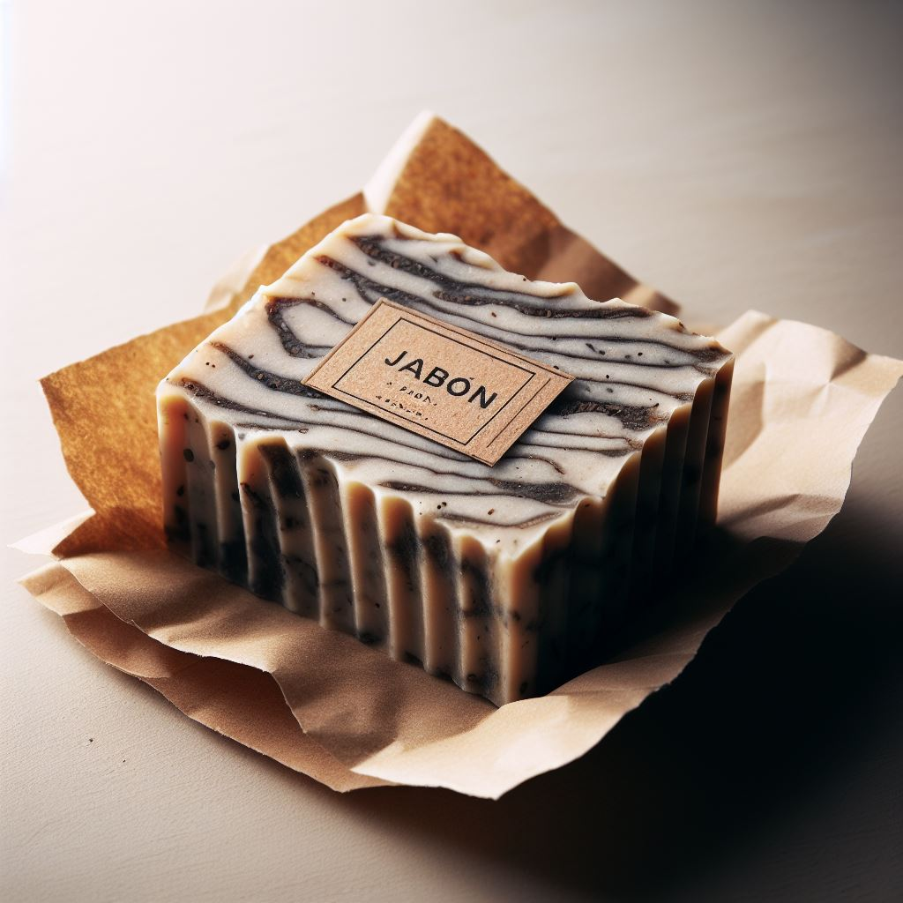
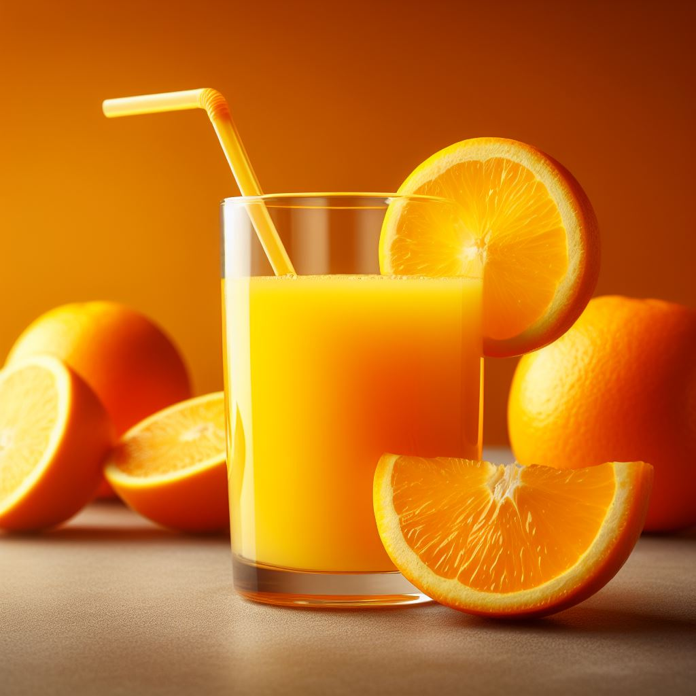
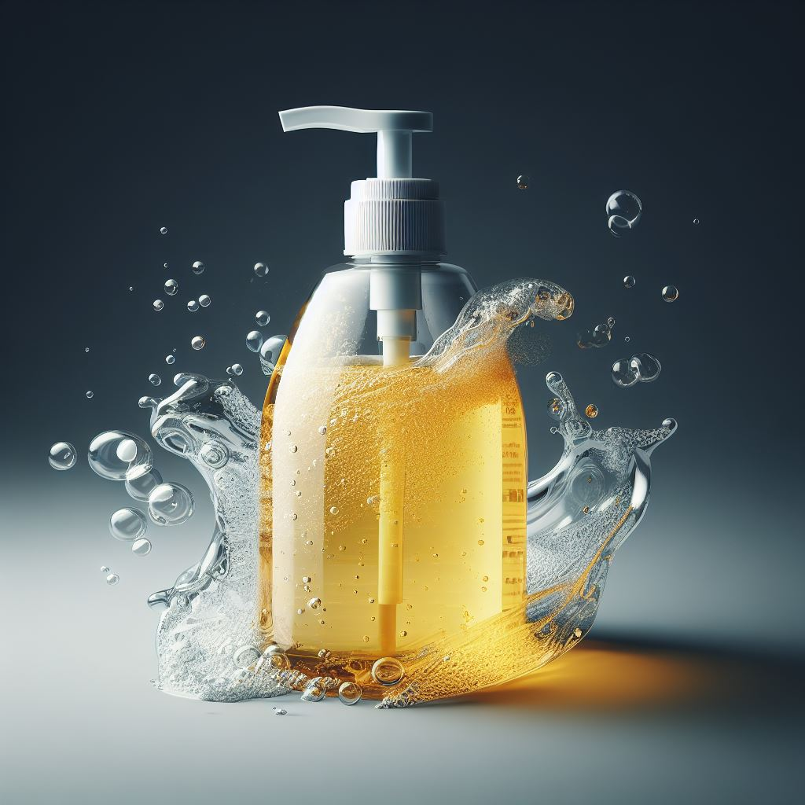

Bienvenido al Laboratorio Virtual
  En este emocionante laboratorio virtual, descubrirás el fascinante mundo del pH y cómo determinar si una sustancia es ácida o básica utilizando el papel tornasol. Pero antes de comenzar, echemos un vistazo a la importancia de este concepto:
La enseñanza del concepto de pH es fundamental, ya que muchas personas tienen ideas incorrectas al respecto. Para ayudar a aclarar estos conceptos, hemos diseñado esta experiencia STEM interactiva que te guiará a través de un emocionante viaje de aprendizaje.
En este laboratorio, aprenderás a utilizar el papel tornasol para determinar el pH de varias sustancias. ¡Diviértete y descubre el fascinante mundo de los ácidos y las bases!
¡Empezar Ahora!Pretest
¿El jugo de limón es un ácido o una base?
¿El bicarbonato de sodio es un ácido o una base?
¿El vinagre es un ácido o una base?
¿El jabón es un ácido o una base?
¿El jugo de naranja es un ácido o una base?
¿El refresco de cola es un ácido o una base?
¿El detergente es un ácido o una base?
¿El agua de lluvia es un ácido o una base?
¿El yogur es un ácido o una base?
Experimentación
En el laboratorio, utilizamos dos tipos de papel tornasol, el rojo y el azul, como indicadores para identificar sustancias ácidas y básicas. Estos papeles son una herramienta valiosa en la química y nos ayudan a comprender la naturaleza de las sustancias que estamos investigando.
Cuestionario Final
Responde a las preguntas para evaluar tu comprensión.